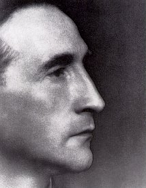

MARCEL DUCHAMP

Marcel Duchamp nasce a Blainville nel 1887, fratello di Jacques e Susanne Villon, studia a Parigi nell' Accademia Julian.
Vicino all'orfismo dopo una prima fase fauve partecipa all'esposizione della "Section d'or" nel 1912, e viene citato da Apollinaire tra i pittori cubisti anche se Gleizes e Metzinger non lo vogliono alla mostra degli "Indépendants".
Il suo famoso "Nudo che scende le scale", esposto all'Armory Show di New York nel 1913, rappresenta lo spartiacque per la moderna pittura americana, viene acquistato dagli Arensberg e decreta il suo successo.
Nel 1915 Duchamp lascia la Francia e si trasferisce negli Stati Uniti, dove realizza la sua grande opera su vetro, "La Mariée mise à nu par ses célibataires" ( o Grande vetro) che racconta la storia della sposa che non riesce a farsi amare dai suoi corteggiatori perchè probabilmente, come suggerisce Octavio Paz, non voule concedersi. Una grande metafora, un monumento alla critica e all'amore, che lascia una domanda in sospeso, qualcosa di incerto, e pone un interrogativo sul destino dell'arte.
Si tratta di una delle opere più importanti e interpretate di questo secolo: due lastre di vetro sulle quali è dipinto un complicato meccanismo che Duchamp lascia non finito nel 1923, dopo un incidente di percorso che ne aveva incrinato la superficie: con questo gesto l'artista abbandona la pittura e si dedica ad altre attività, per esempio gli scacchi.
Dal 1913 Duchamp costruisce "ready -made" e altre "trappole" artistiche: nel 1917 invia alla Società degli artisti indipendenti di New York quella più imbarazzante: un gabinetto in ceramica bianca rovesciato dal titolo "Fontana".
Nel 1934 Duchamp inventa un museo personale portatile, la "Boite en valise": all'interno di una scatola sistema le versioni in miniatura delle sue opere più significative, compreso il "Grande vetro". Per "facilitare" l'accesso alla sua opera Duchamp conserva all'interno di un'altra Boite tutti gli appunti e le ipotesi di lettura che hanno accompagnato i dieci annia di elaborazione del "Grande vetro".
Dopo una lunga "inattività" motivata dalla sua paradigmatica pigrizia, Duchamp attende lungamente alla sua opera finale (1946-1966): "Etant donnés": 1) la chute d'eau, 2) le gaz d'éclairage, complicata quanto il "Grande vetro", al quale forse vuole fornire una risposta.
Muore a Neully nel 1968.